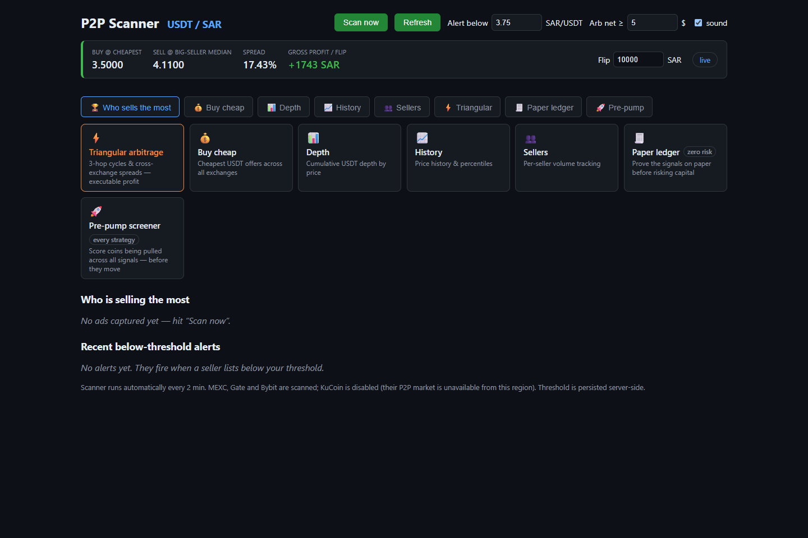
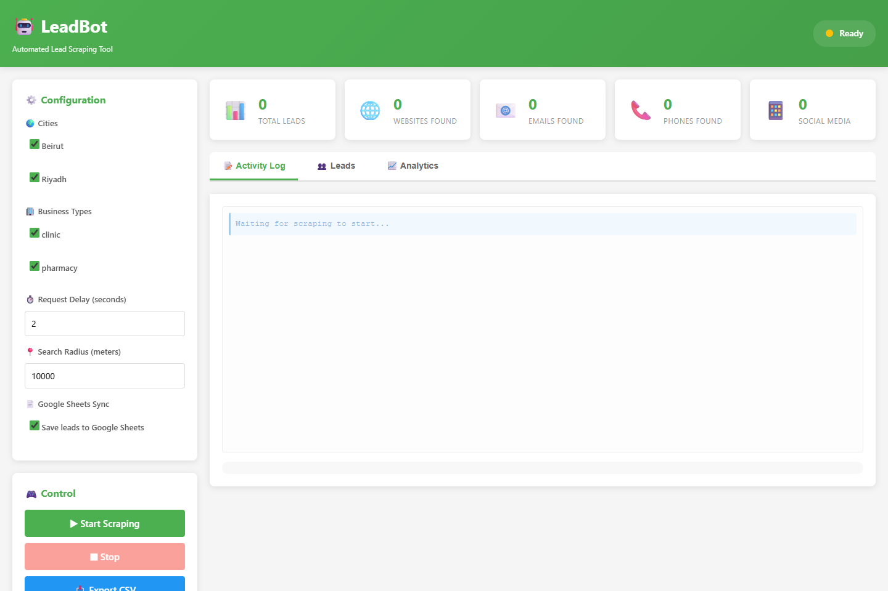
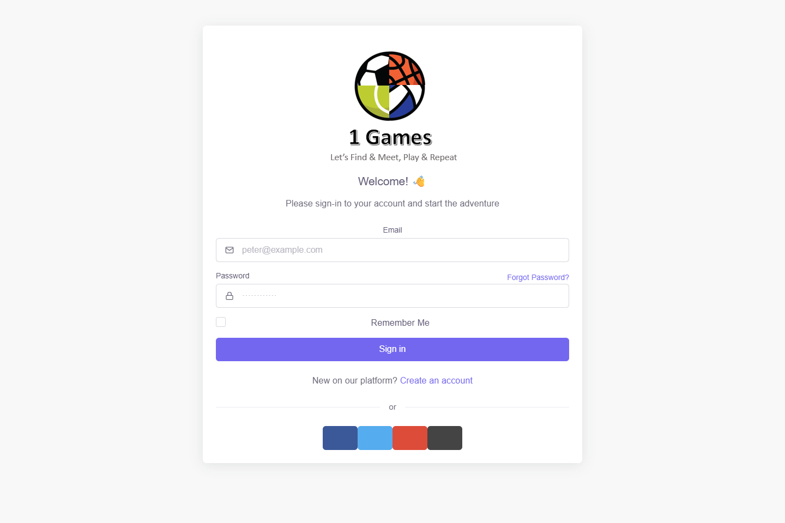
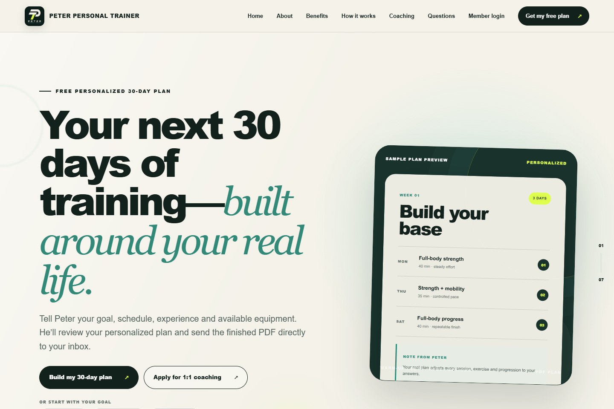

5K+
Notifications each day
Email and SMS service with retries, dead-letter queues, and monitoring.
Emcrey · Banking integrationSenior software engineer · Java & .NET
I’m Peter. I build banking integrations, business platforms, and automation—from dependable APIs to the interfaces people use.
Based in Riyadh · Remote-friendly · Backend & full stack engineering


Engineering with measurable outcomes
Explore my experience5K+
Email and SMS service with retries, dead-letter queues, and monitoring.
Emcrey · Banking integration80%
Validated Excel workflows for an insurance brokerage platform.
Clover Broker · Insurance85%
xUnit coverage supporting enterprise modules and workflow delivery.
Onsite Snagging · Enterprise software01 / Selected work
Six projects. Different challenges.
The same focus on useful, working software.
AI & CUSTOMER EXPERIENCE
A chatbot that brings support into the product.
An embeddable support experience combining AI conversations, messaging, and help content in a widget customers can use without leaving a website.
What I built. The web application, backend services, and embedded widget experience, including tenant-aware configuration and conversational workflows.
Product focus. Bring AI and human support into one accessible interface, with responsive layouts and English/Arabic widget support.
Demo widget
BUSINESS OPERATIONS
One workspace for running a cleaning business: bookings, customers, dispatch, teams, and payments.
What I built. A multi-company operations platform with role-based access, scheduling, pricing rules, recurring bookings, and financial reporting.
Product focus. Connect the office and field team through a dispatch board, customer history, and configurable business workflows.

MARKET TOOLS & AUTOMATION
TradingView strategy scans and P2P crypto monitoring that turn market data into clear watchlists and alerts.
TradingView. Automated premarket gapper and strategy scanning with scheduled checks, duplicate prevention, and Telegram reporting.
P2P markets. Exchange price comparison, configurable filters, historical tracking, and alerting. The screenshot shows the P2P dashboard; TradingView is a separate workflow.
Product focus. Make research repeatable and surface relevant market conditions for manual review.

LEAD GENERATION
Automated business research and contact discovery, with a dashboard for managing collection and exports.
Frontend preview · empty dataset
What I built. An asynchronous research pipeline with multiple search engines, contact extraction, business filters, and a web dashboard.
Product focus. Reduce repetitive research and organize results through CSV export and Google Sheets integration.

SPORTS & BOOKING
A platform connecting players with clubs and pitches, with venue discovery, reservations, and real-time communication.
Frontend preview · sign-in screen
What I built. Sports club, pitch, and reservation workflows, backed by APIs and a separate real-time chat service.
Product focus. Help players find venues and coordinate bookings. My broader Sports Booking work also includes Flutter and Google Maps integration, as described in my CV.

COACHING & MEMBER EXPERIENCE
A coaching website that connects a guided assessment, personalized training plans, and a private member portal.
What I built. A responsive coaching website with a validated assessment, local plan-generation engine, branded PDF delivery, and a trainer review and publishing workflow.
Member experience. Email-code sign-in, workout logs, daily check-ins, progress charts, and private photo storage, backed by Cloudflare D1, R2, and Drizzle ORM.
Screens from my projects. Click any image to take a closer look.
02 / Experience
From banking integrations to business platforms, I bring hands-on experience across the full software lifecycle.
Choose a CV editionSenior Backend Java Developer · Riyadh
Banking systems for letters of credit and guarantees. Spring Boot microservices, external integrations, IBM MQ, Kafka, and notification services.
Full Stack .NET Developer · Freelance
End-to-end insurance brokerage platform covering policies, payments, reports, and administration, with Azure deployment and automated delivery.
Lead Full Stack Web Developer
Enterprise modules, document workflows, dynamic forms, mobile APIs, and automated tests. Led sprint planning and code reviews.
Exquitech · Neorcha · GridPos
Full stack development, mobile apps, Java services, and desktop applications across hospitality, quality control, and retail.
03 / A little about me
My work connects two worlds: the systems a business depends on and the software people interact with every day.
I’ve built banking integrations in Riyadh, insurance workflows, and enterprise applications. That experience shapes how I approach a product: understand the business rules, make the backend dependable, and make the next step clear for the person using it.
My independent projects put that approach into practice—from an embedded support chatbot to a cleaning operations workspace and a coaching member portal. They bring together APIs, data, interfaces, and deployment.
I also bring experience leading sprint planning and code reviews in a three-developer team. I work across the implementation details while keeping the wider delivery in view.
B.Sc. Computer Science
Lebanese Canadian University · 2018
Java · C# · Spring Boot · ASP.NET Core
REST APIs · Microservices · Event-driven systems
SQL Server · PostgreSQL · MySQL
Entity Framework · Dapper · Kafka · IBM MQ
JavaScript · TypeScript · React · Python · Flutter
Azure · AWS · Docker · GitHub Actions
Senior Java or .NET backend engineering
Full stack business platforms · API integration
For recruiters & hiring teams
Choose a regional edition of my CV.
Each includes my experience, projects, and profile links.
04 / Let’s build something useful
Based in Riyadh.
Let’s talk about your project or engineering team.